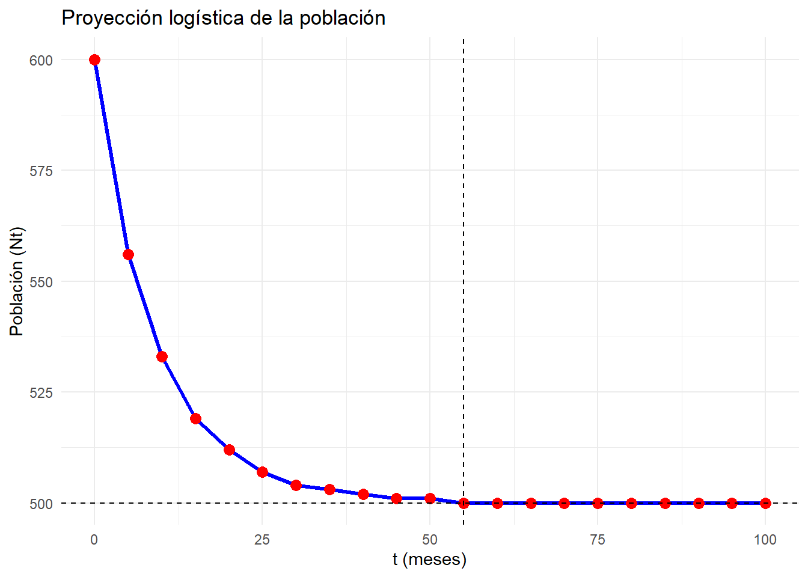

# Cálculo de la tasa o velocidad de crecimiento de la población de pasálidos
No = 200
k = 500
r = 0.1
dN_dt = r * No * (1 - (No/k))
dN_dt # Por cada més la población aumenta en 12 individuos[1] 12
Entrenamiento de procedimientos básicos para el análisis de modelos logísticos en poblaciones silvestres, con la aplicación del programa RStudio. Este taller es continuación del anterior (enlace).

[
Nota: Previo a la sesión del taller de cómputo, es necesario que revisen el video de la clase en donde se explica el procedimiento (ver enlace de videos semanas 6 a 7), el día de la sesión, el docente evaluará la revisión que se haya hecho de ese material.

Las pautas resumidas de este taller se encuentran en el siguiente enlace Enlace al pdf del Taller.
2. SIMULACIONES DE CRECIMIENTO LOGISTICO CON PARAMECIUM.
A_ Repita los pasos A-C del ejercicio anterior, con algunas variantes en los valores a tabular.
B_ Entrar en "Model" y hacer click "Population". Editar los siguientes valores:
C_ En "Density dependence" hacer click en el modelo "Screamble", para K utilizar un valor de acuerdo con la Fig. 3.8.

D_ Seleccionar "Simulation" y hacer click en "Run". Salir de esa ventana.
E_ Seleccionar "Trajectory summary", la cual simulará el crecimiento exponencial.
G_ Cambiar la abundancia inicial a 800 y correr otra simulación. Hacer descripción de la trayectoria generada.
3. ADICIONANDO ESTOCASTICIDAD AL MODELO LOGISTICO.
En el experimento desarrollado por Gause con la población Paramecium, se adicionará variación por estocasticidad demográfica.
A_ Adicionar 100 replicas y activar la casilla "demographic stochasticity".
B_ Si R=f+S (sobrevivientes + sus crías en t+1).
C_ Correr la simulación y comparar con los resultados experimentales de Fig. 3.8.


Pregunta 1
a) Datos No = 200 individuos k = 500 individuos r = 0.1 indv./indv. x mes dN/dt = ?
Paso 1: Datos para la ecuación logística
# Cálculo de la tasa o velocidad de crecimiento de la población de pasálidos
No = 200
k = 500
r = 0.1
dN_dt = r * No * (1 - (No/k))
dN_dt # Por cada més la población aumenta en 12 individuos[1] 12Paso 2 Base de datos
#
t = seq(0,100, by=5)
t [1] 0 5 10 15 20 25 30 35 40 45 50 55 60 65 70 75 80 85 90
[20] 95 100Nt = k/(1 + ((k-No)/No) * exp(-r*t))
round(Nt) [1] 200 262 322 375 416 445 465 478 487 492 495 497 498 499 499 500 500 500 500
[20] 500 500datos = data.frame(tiempo = t, densidad = round(Nt))
datos tiempo densidad
1 0 200
2 5 262
3 10 322
4 15 375
5 20 416
6 25 445
7 30 465
8 35 478
9 40 487
10 45 492
11 50 495
12 55 497
13 60 498
14 65 499
15 70 499
16 75 500
17 80 500
18 85 500
19 90 500
20 95 500
21 100 500Paso 3: Figura de la proyección logística de la población.
La Figura 1, muestra que la población de pasálido alcanza su capacidad de carga de 500 individuos en a los 75 meses.
#
library(ggplot2)
t = 75
ggplot(datos, aes(x= tiempo, y= densidad)) + # Capa de ejes
# Capas de líneas del modelo
geom_line(color="blue") +
geom_point(color="red", size=2) +
geom_vline(xintercept = t, color = "black", linetype = "dashed") + # Línea de t (75) para N = k
geom_hline(yintercept = k, color ="black", linetype = "dashed") + # Línea de k (500)
# Capas de texto en la figura
geom_text(x = t + 0.5, y = 470,
label = paste("Valor de k\nen", t, "meses"),
color = "blue", size = 4, vjust = 0.5) +
geom_point(aes(x = t, y = k), color = "blue", size = 4) +
# Capas de rotulos de los ejes
labs(x= "t (Meses)", y ="Poblacion (Nt)",
title= "Proyeccion logistica de la poblacion de Pasalidos") +
theme_classic()
b) Datos No = 200 individuos k = 500 individuos r = 0.1 indv./indv. x mes dN/dt max = ? Máxima capacidad o velocidad de aumento de la población
Paso 1: Datos para la ecuación logística
La velocidad de crecimiento k/2 fue de 12 individuos por mes y la velocidad o tasa máxima de aumento de la población es de 12.5 individuos por mes cuando se cuenta con un k/2 de 250 individuos (K=500 individuos)
#
No = 200
k = 500
r = 0.1
k_2 = 500/2
dN_dt.max = r * k_2 * (1-(k_2/k))
dN_dt.max # La veloidad máxima de aumento de la población es de 12.5 indv. / t[1] 12.5Paso 2 Base de datos de Nt vs. dN_dt
#
No= 1
t = seq(0,150, by=10) # Secuencia de tiempos de 0 a 150 meses
t [1] 0 10 20 30 40 50 60 70 80 90 100 110 120 130 140 150Nt = k/(1 + ((k-No)/No) * exp(-r*t)) # Cálculo de Nt para los diferentes tiempos (meses)
round(Nt) [1] 1 3 7 19 49 115 224 344 428 471 489 496 498 499 500 500dN_dt = r * Nt * (1 - (Nt/k)) # Cálculo de tasa dN_dt para los diferentes Nt
dN_dt [1] 0.099800000 0.269429521 0.718937093 1.859842376 4.444871573
[6] 8.834458084 12.359803148 10.746469685 6.141555821 2.732206600
[11] 1.083098136 0.409847507 0.152362391 0.056268217 0.020729435
[16] 0.007629933datos = data.frame(densidad_Nt = round(Nt), dN_dt = round(dN_dt))
datos densidad_Nt dN_dt
1 1 0
2 3 0
3 7 1
4 19 2
5 49 4
6 115 9
7 224 12
8 344 11
9 428 6
10 471 3
11 489 1
12 496 0
13 498 0
14 499 0
15 500 0
16 500 0Paso 3: Figura de la proyección logística de la población.
La Figura 2 muestra la relación de la velocidad de aumento (dN/dt) con el tamaño de la población (Nt), definiendo que la máxima tasa de aumento (dN/dt máx. = 12.5 indv. x meés) se presenta en un k/2 de 250 pasalidos. Este pstrón puede ser visualizado en la pendiente de la curva de la Figura 1.
#
library(ggplot2)
Nt = 250
# Capas de de los ejes de la figura
ggplot(datos, aes(x= densidad_Nt, y= dN_dt)) +
geom_smooth(color="blue") +
geom_point(color="red", size=2) +
geom_vline(xintercept = 250, color = "black", linetype = "dashed") + # Línea de t (75) para N = k
geom_hline(yintercept = 12.5, color ="black", linetype = "dashed") + # Línea de k (500)
# Capas de texto en la figura
geom_text(x = 250, y = 11,
label = paste("Valor de dN/dt.max\nen Nt = 250 indv."),
color = "blue", size = 4, vjust = 0.5) +
geom_point(aes(x = 250, y = 12.5), color = "blue", size = 4) +
#
labs(x= "Densidad (Nt)", y ="Tasa de Crecimiento (dN/dt)",
title= "Proyeccion logistica de la poblacion de Pasalidos") +
theme_classic()
Datos de el ejercicio:
No = 600 individuos k = 500 individuos r = 0.1 indv./indv. x mes dN_dt = ?
Paso 1. Datos para la ecuación logística
Si la población incia con 600 individuos, está supera a su capacidad de carga en 100 individuos, presentando una tasa o velocidad de disminución de 12 individuos por mes.
#
No = 600
k = 500
r = 0.1
dN_dt = r * No * (1-(No/k))
dN_dt[1] -12Paso 2. Base de datos
#
t = seq(0,100, by= 5)
t [1] 0 5 10 15 20 25 30 35 40 45 50 55 60 65 70 75 80 85 90
[20] 95 100Nt = k/(1+((k-No)/No)*exp(-r*t))
round(Nt) [1] 600 556 533 519 512 507 504 503 502 501 501 500 500 500 500 500 500 500 500
[20] 500 500# Base de datos (datos)
datos = data.frame(tiempo=t, densidad=round(Nt))
head(datos) # head muestra solo las 6 primeras filas de la tabla. tiempo densidad
1 0 600
2 5 556
3 10 533
4 15 519
5 20 512
6 25 507Paso 3. Figura de la proyección logística
La Figura 3 permite visualizar el descenso de la población, debido a que la densidad inicial se encuentra por encima de su capacidad de carga.
#
library(ggplot2)
t = 55 # Tiempo en que la pob. desciende a su valor de k (500 indv.)
#
ggplot(datos, aes(x= tiempo, y=densidad)) +
geom_line(color="blue", size=1.2) +
geom_point(color="red", size= 3) +
geom_hline(yintercept = k, color = "black", linetype = "dashed") +
geom_vline(xintercept = t, color = "black", linetype = "dashed") +
labs(x= "t (meses)", y= "Población (Nt)",
title = "Proyección logística de la población") +
theme_minimal()
Datos del ejercicio
No = 200 individuos k = 500 individuos r = 0.1 indv./indv. x mes t = 5 meses N5 = ?
Paso 1. Datos para la ecuación logística
No = 200
k = 500
r = 0.1
t = 5
N5 = k / (1+((k-No)/No) * exp(-r*t))
round(N5)[1] 262Datos del ejercicio
No = 200 individuos Nt = 400 individuos k = 500 individuos r = 0.1 indv./indv. x mes t = ?
Paso 1. Datos para la ecuación logística
No = 200
Nt = 400
k = 500
r = 0.1
t = (log(Nt) - log(k) + log(1+((k-No)/No)))/r
t[1] 6.931472# Prueba debe dar Nt = 500
Nt = k / (1+((k-No)/No) * exp(-r*6.931472))
round(Nt)[1] 286
Akçakaya, H. Resit, Mark A. Burgman, and Lev R. Ginzburg. Applied Population Ecology: Principles and Computer Exercises Using RAMAS EcoLab 2.0. Segunda erdición. Sunderland: Sinauer Associates, 1999. (enlace del libro)

Gotelli, Nicholas J. A Primer of Ecology. Cuarta edición. Massachusetts: Sinauer Associates, 2008. (enlace del libro)

Notas de clase de poblaciones. Javier Rodríguez-Barrios. Enlace al pdf de las notas de clase

Ecuaciones requeridas para las clases de poblaciones. Javier Rodríguez-Barrios. Enlace al pdf de las ecuaciones

Diapositivas para las clases de poblaciones. Javier Rodríguez-Barrios. Enlace al pdf de las diapositivas


[
El siguiente cuestionario es tomado de las notas de clase Enlace, se requiere resolver las siguientes preguntas, que servirán para realizar un entrenamiento, previo a la evaluación que realizará el docente sobre modelos exponenciales en poblaciones. En la medida de las posibilidades, es necesario que cada ejercicio sea graficado y analizar los resultados obtenidos.
Una población de bacterias crece de acuerdo a la ecuación logística. Si la población inicial es de 500 bacterias y la capacidad de carga es de 10000 bacterias, y la tasa de crecimiento es de 0.05 bacterias/bacteria x hora, ¿cuál es la tasa de crecimiento para la población dN/dt?
Se tiene una población de plantas que crece de acuerdo a la ecuación logística. Si la población inicial es de 100 plantas y la capacidad de carga es de 400 plantas, y la tasa de crecimiento es de 0.02 plantas/planta x día, ¿cuántas plantas habrá después de 6 meses?
Una población de ratones crece de acuerdo a la ecuación logística. Si la población inicial es de 50 ratones y la capacidad de carga es de 500 ratones, y la tasa de crecimiento es de 0.1 ratones/ratón x semana, ¿en cuántas semanas la población alcanzará el 80% de su capacidad de carga?
Se investiga una población de aves denso-dependiente que tienen las siguientes relaciones para las tasas de nacimiento (b’) y mortalidad (d’) en función del tamaño poblacional (N): b’ = 0.12 + (0.01)N – (0.0001)N^2 d’ = 0.18 + (0.008)N ¿Cuál es el valor máximo que puede alcanzar la tasa de natalidad en esta población?
Se estudia una población de lagartos denso-dependiente que tienen las siguientes relaciones para las tasas de nacimiento (b’) y mortalidad (d’) en función del tamaño poblacional (N): b’ = 0.06 + (0.03)N – (0.0004)N^2 d’ = 0.21 + (0.007)N ¿Qué sucedería con la población si se redujera la tasa de mortalidad en un 50%? ¿Afectaría esto a la capacidad de carga de la población?